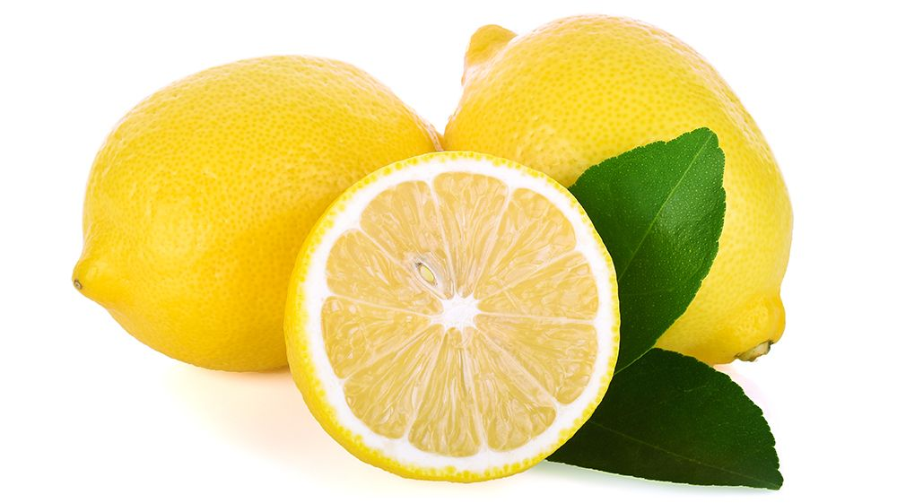

Oasis est une marque proche de VOUS. Nous sommes fiers de qui nous sommes, et de qui vous êtes. Nous voulons vous connaître et vous faire partager vos bonnes actions et votre dévotion à notre mère nature. En ce mercredi 13 janvier, nous allons découvrir l'histoire de Cécile, une femme presque comme les autres. Elle a su se découvrir grâce à la culture de citrons, une passion unique qu'Oasis souhaite vous faire découvrir. Cécile a toujours aimé la nature et les fruits depuis sa tendre enfance. Elle était issue d'une famille de cadres, et n'est pas du tout du secteur agricole qu'elle chérit tant. Cependant, à l'âge de 28 ans, elle a décidé de quitter métier et ville pour s'installer à la campagne et cultiver elle-même tout ce qu'elle désire. Aujourd'hui, elle va nous raconter ce qui s'est passé il y a deux semaines dans la petite ville de Thierville-sur-Long. "La fête du village approchait, cela fait maintenant 4 ans que j'y vais et tous les ans je m'y rends avec ma fille et mon maris pour voir du monde, s'amuser ... Cette année, j'ai décidé d'y apporter ma touche. Cultivant des citrons et des pommes, j'ai décidé d'en apporter des kilos et des kilos à tout le village. Ce n'est pas pour déplaîre aux plus gourmants. J'étais très heureuse de pouvoir leurs dire que mes fruits sont issues d'une culture responsable et bio, aucun élément chimique n'est entré en contact avec mes produits. Je n'ai jamais vendus mes fruits à qui que ce soit, je les cultive pour mon plaisir, celui de ma famille, de mes amis et de mes voisins. Depuis quelques mois, je travaille avec Oasis et je leurs fournis de temps en temps de mes fameux citrons dont tout le monde rafolle. Le bio, c'est l'affaire de tous, nous sommes tous concernés. Et aux prix des bouteilles d'Oasis, on ne va pas s'en priver." De quoi en convaincre certains que le bio n'est pas seulement une nouveauté du monde actuel, le bio nous concerne tous, c'est le futur de vos enfants, et le notre si nous y contribuons. Il ne faut pas oublier que la marque Oasis est soutenu exclusivement par des producteurs bio, interdisant les pesticides dans leurs exploitations. Nous n'avons que de l'eau et des fruits dans nos boissons, tout en gardant un prix très correcte, en dessous du marché du soda, qui est nettement supérieur.
